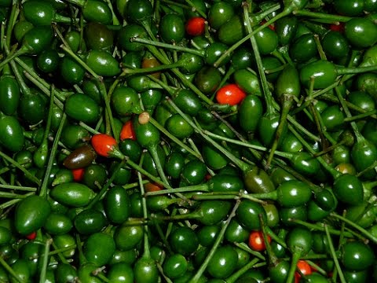

Planta silvestre de la región, es muy común en las áreas agrícolas, dado que
nunca falta el agua. Los pobladores salen a “piscar el chile piquín” entre los meses de agosto-septiembre
y sin duda alguna es un complemento consentido que no puede faltar en las mesas de las familias jaumavences.

Los chiles de monte en escabeche son una manera fácil de preservar estos pequeños chiles picantes por más tiempo.
Los jaumavences preparan los chiles en vinagre agregando en un recipiente, generalmente de cristal: ajo, cebolla,
vinagre y algunas especias.
Estos chiles son muy picantes, por lo general de 7 a 8 veces más que el chile jalapeño según la escala Scoville
(30,000-60,000 unidades) y es de conocidos observar a jaumavences que salen de sus cocinas y cortan
de 2 a 3 chiles para degustarlos a la hora de la comida.